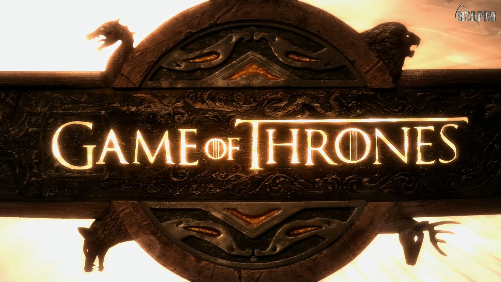
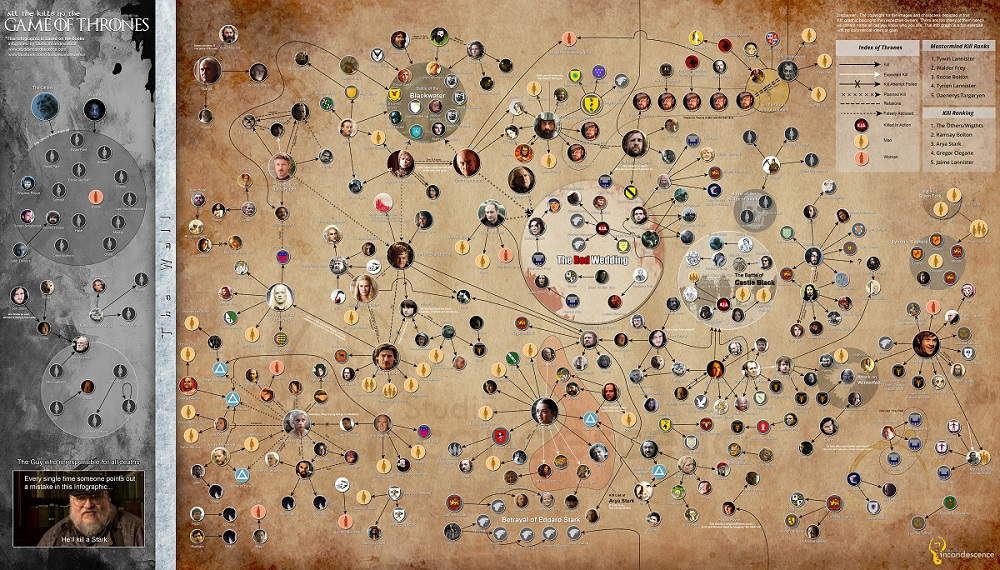

The fog of war descends on Westeros…
Ascension II : Crossed Banners
Ascension is an online text-based game played alongside season 6 of HBO’s Game of Thrones. You play by selecting your favourite characters, and having them compete in award categories of wit, damage, jockey, style and support. Points are awarded by fellow players whom cast votes each episode.
It is similar to fantasy football, as you build up a roster of characters at the start of the season, and get points for their performance in each episode.
In keeping with the Game of Thrones logic, you can also send your characters on diplomatic and murder missions; gathering intelligence or taking out characters from other player’s rosters. But be careful! Failed attempts leave you exposed! Plot at your own peril…
Quick Start
The Rules help you to make the best decisions in picking your house and drafting your characters, but they aren’t essential to play. To get started, you just need to sign up and pick your house and characters.
- Sign Up. Sign up and pick a House. Houses lend special abilities and bonuses.
- Join a League. You will be assigned to a league by the Game Master. Await invite.
- Pick 7 Characters for your Roster. Every episode your characters compete for points in the award categories (wit, damage, jockey, style and support). Players all vote for the characters who are most deserving of points in each category, so pick your characters wisely. Rosters are secret. Follow a strategy.
- Watch the Weekly Episode. Watch the episode within a week of it being aired.
- Cast your Weekly Votes. For each of the award categories, vote for that episode’s winner and the runner-up . Votes are public.
- Initiate Weekly Missions. Send one of your characters to gather intel, and/or assasinate characters from another roster. Missions are secret - until they fail.
- Consult the Chronicles. A chronicle is sent out to all players with the voting record, and the results from the spy and murder missions, some private, some public.
- Rank on the Leaderboard. Leaderboard is updated to reflect the awarded character points.

Rules of the Game
The game is played in a league of 12 players. Each player represents a House and fields a Roster of 7 GoT Characters. Characters are used to score points across 5 Award Categories. Points are awarded based on Popular Vote after each episode. The player with the most points at the end of the season ascends to the throne.
Character Roster
A Character Roster is a selection of GoT characters a player fields for the entire game. Players may freely and secretly pick 7 Characters to form their roster before the season starts. Players can pick the same characters. Though players represent a unique House, they are not restricted to fielding characters from that House.
Award Categories
During each episodes, characters with vie for points in the following award categories:
- Wit - smartest or most piercing delivery of a line.
- Damage - physical and mental destruction, dealt or received.
- Jockey - most cunning manoeuvring to gain or secure the Iron Throne.
- Style - best look, appearance or use of props.
- Support - most helpful supporting character.

Houses
The 12 available houses are unique and give your roster extra flavour with their abilities & bonuses. Abilities change the mechanics of the game, while bonuses change how strongly members of that house score in a particular award categories.
Available Houses
- House Bolton
- Council of Meereen
- House Arryn
- House Greyjoy
- House Martell
- Independents
- Night’s Watch & Free Folk
- League of Minor Orders
- House Targaryen & The Dothraki
- House Tyrell
- House Lannister
- House Stark
Of special note are the Council of Meereen, which consist of the formidable characters whom remained to rule Meereen at the close of Season 5; House Arryn, which might as well be called House Baelish; Independents which gather the many mystics, magicians and maniacs across both continents; Night’s Watch & Free Folk which have formed an unholy alliance; League of Minor Orders which gather nobility and clergy from the Order of the Sparrows, Slave traders from Essos, Lords of the House Frey and Ser Davos Seaworth; House Tyrell which includes their sworn bannerman from House Tarly; and House Targaryen & The Dothraki which contain many of the yet-to-be-introduced characters.
House Abilities
Each house has a special ability tostrategicly make use of your House’s strengths. Be sure to consult the other houses’ abilities as well though .. assome may affect you more than your own…
Depending on the ability type, abilities modify the way prominence, diplomacy, violence and missions work for that House. These are the interactive components of the game and are explained below. The specific modifications are detailed in the grants column, and the characters listed under immunity are impervious to damage from attack if drafted for that House. You can thus assume that House has fielded that character, though attacking them is of no use as they wouldn’t take any damage.
| house | ability | type | immunity | grants |
|---|---|---|---|---|
| House Bolton | Fifty Shade of Flay | violence | - | Chance that an attack on this House backfires and retargets the assassin itself - Chance is target’s prominence power |
| Council of Meereen | A Little Bird Told Me | diplomacy | Varys | Knowledge of all diplomacic missions against this House |
| House Arryn | Littlefinger’s Brothel | diplomacy | Petyr Baelish | Chance of recovering intel from the source of diplomatic missions run against this house - Chance is , intel at same level as the mission |
| House Greyjoy | Valar Morghulis | violence | Theon Greyjoy | Theon splatter damage. On a succesful attack by Theon, all characters of the other roster take damage |
| House Martell | Sand Snakes | violence | - | All attacks to become lethal, provided that the total prominence power of this House is lower than the prominence of the target’s roster |
| Independents | Valar Dohaeris | violence | Jaqen H’ghar | The faceless man the ability to take on other personas. If Jaqen kills a Character, they join this House’s Roster |
| Night’s Watch & Free Folk | Beyond the Wall | diplomacy | - | Dissemination of misinformation. Chance of false intel to be recovered in diplomatic missions run against this house is |
| League of Minor Orders | Rank & File | prominence | - | Characters with Prestige Power 1 and 2, now multiply their Score with and instead of and |
| House Targaryen & Dothraki | Bloodriders | violence | - | All Characters on this House’s Roster gain Bonus on a succesful attack by a Dothraki Character |
| House Tyrell | Poisoned Roses | missions | - | Full Secrecy. Missions are never revealed. Not even to the Council of Mereen |
| House Lannister | Lannister’s Word | missions | - | All performance penalties for running missions are waived - The debts have been paid. |
| House Stark | The North Remembers | diplomacy | - | Assitance from the Northmen - An addition Level 3 diplomatic mission is run each episode against a random House on this House’s behest |
House Bonuses
House Bonuses reveal their strengths and advantages over the other Houses. They are applied to the respective award scores of any of the characters on a player’s Roster. The House Bonueses are distributed as follows:
| House | wit | damage | jockey | style | support |
|---|---|---|---|---|---|
| House Bolton | - | 10 | - | - | 10 |
| Council of Meereen | 20 | - | - | - | - |
| House Arryn | - | - | 20 | - | - |
| House Greyjoy | - | 20 | - | - | - |
| House Martell | 5 | 5 | 5 | 5 | 5 |
| Independents | - | - | - | 10 | 10 |
| Night’s Watch & Free Folk | - | 10 | - | - | 10 |
| League of Minor Orders | - | - | - | - | - |
| House Targaryen & Dothraki Horde | - | 10 | 10 | - | - |
| House Tyrell | - | - | - | 20 | - |
| House Lannister | 10 | - | 10 | - | - |
| House Stark | - | - | - | - | 20 |
For example, if Player A has House Bolton, and Player B has House Stark, if Sansa Stark is on both their rosters, and scores 100 points in the Damage category - pending any further modification by health, missions, house abilities - Player A would apply its 10% bonus and be awarded 110 points, whereas Player B would not have any House Bonus and be awarded 100 points.
Characters
Other than their ability to bring in points in the award categories, a character also has four traits which define their role and value in the game.
- House, affiliation with a major or minor house, a cult, guild or the independents.
- Prominence, how central they are to Game of Thrones.
- Violence, how deadly they are.
- Diplomacy, how good they are at gathering intelligence
IMPORTANT : Prominence determines the score multiplier for the character
The higher the prominence, the lower the multiplier. See Prominence Multiplier for details.
Available Characters
All 88 available characters have an affiliation & powers and have a bios to remind you who they are.

Missions
Missions are at the heart of Ascension II : Crossed Banners. This is where Crossed Banners and regular fantasy leagues diverge. Besides the typical voting, you can now also send two of your characters on missions after each episode.
The objective of missions is to eliminate characters from other player’s rosters. You achieve this by sending one of your characters to assisinate a specific character from a specific opponent’s roster. The challenge being that rosters are secret, so you’ll need to run spy missions to uncover who are amongst their ranks.
Under the guise of diplomacy you may learn enough about another roster to take out some of its characters. Running spy is similar to the game of Mastermind, but instead of colour codes you get intel on the roster’s affiliations, prominence, violence and diplomacatic power.
- N.B. Sending your character on a mission, gives them a performance penalty for that episode. The percentage depends on their Diplomacy/Violence Power.
Diplomacy : Gathering Intelligence
For slaughter to be somewhat effective, it needs to be somewhat discriminate. You thus have diplomatatic missions at your disposal to gather intelligence on another player’s roster. At the outset all rosters but your own are secret, but through whatever means available you can piece together which characters your opponents have fielded.
You initiate a diplomatic missions every week in the same form as you cast your votes on, by sending one of your characters to spy on a specific House. Diplomatic Missions can recover intel on the roster composition, or intel on a specific character.
- Roster intel example : ‘There are more Starks than Lannisters, both at least one’
- Character intel example : ‘This character has more diplomacy than prominence, but less damage than both’
Which one you target and how many pieces of intel you retrieve depends on the Diplomacy Power of the Character you dispatch:
| power | intel target | intel count | performance penalty |
|---|---|---|---|
| 1 | roster | 1 | 0% |
| 2 | roster | 2 | 25% |
| 3 | roster | 3 | 50% |
| 4 | character | 1 | 0% |
| 5 | character | 2 | 25% |
Character Intel missions are special, as the intel is always gathered on the same character until they are attacked. This targetting of a single character means that you can build up a file on that character to make sure you’re killing the right character. However, the consistent target is only specific to your mission. If another player runs a character intel missions against the same house, they may be locked on to a different character. So the intel can’t be as easily combined.
There is a performance penalty for the characters sent on a mission, i.e. a Diplomacy Power 3 Character may be three times as effective at gather roster intel as a Diplomacy Power 1 character, but they will only award the player 50% of their total points that episode.
Rosters are secret, intelligence is… but doesn’t have to be. You may form informal allegiances with other players, and coordinate diplomatic missions and share the intel between you.
Violence : Attempting Murder
Once you’ve cleared sufficient doubt which House has a particular Character you’d want to damage, you can send in one of your assassins to take them out. The purpose of killing off characters is to prevent them from scoring any more points for their house - or simply out of spite.
- Each week you’re given a single opportunity to order one of your characters to attempt to kill another player’s character.
- You send them on a mission by selecting the target House, and the target Character.
- You’ll only be presented with Characters which have been fielded in at least one roster for the game.
- Attempts can be either succesful or fail.
- Succesful Attempts
- Result in the target taking immediate health damage according to the Damage Power of the Assassin. The effects limit the target’s scoring potential for the current episode.
- Character deaths and damage are publicly reported in the Chronicle.
- The guilty party is not mentioned.
- Failed Attempts
- Backfire terribly. If you guessed the wrong character on your opponent’s roster, it will be published in the Chronicle that you made an attempt and failed, mentioning your house, and the house you were targeting.
- The player you attacked receives two items of Roster Intelligence from torturing your assassin.
- The player you attacked also receives the assassin’s Affiliation, Prominence and Violence Power.
The degree of damage and success rate is determined by the assassin’s Violence Power:
| power | damage | success rate | performance penalty |
|---|---|---|---|
| 1 | 100% | 25% | 50% |
| 2 | 25% | 100% | 25% |
| 3 | 50% | 100% | 0% |
| 4 | 75% | 100% | 25% |
| 5 | 100% | 100% | 50% |
- Damage is not commulative. So if you deal 50% damage in one round, running the same assassination attempt will not kill the player. You’d need to send a lethal assassin
- Certain House / Character combinations grant them immunity from attack.
- There is a performance penalty for the characters sent on a mission, i.e. a while a Violence Power 5 character results in the death of the target character if succesful, it limits their scoring performance for that episode by 50%, whereas a Violence Power 3 character would only do 50% health damage, not lose any points.

Popular Vote
Players can log in to the Ascension game with the Facebook account they signed up with. They may then vote for both the winner and the runner-up (i.e. top 2) in each Award Category. Scoring is done each Saturday at 12:00 Hong Kong time. Votes and Missions which have not been cast will not be considered.
Scoring and Awarding Points
A winning vote counts for 20 points, a runner-up vote scores 8 points. Characters rack up points in each award category, but before they are awarded to the players who fielded them, the points are first modified by the character’s health (lower health is a negative multiplier) and a player’s character and award category bonuses (bonuses are positive multipliers). In sum, Characters score points based on votes, Players are awarded points based on their character’s score, health and bonus multipliers. A player’s points across their characters are summed up which becomes their episode score. The sum of the episode scores after 10 episodes is the season score, which determines the winner.
Prominence Multiplier
Gaining points from your characters is subject to a ‘prominence multiplier’ - whatever score the character should have been awarded based on points scored, is further multiplied by . This is to attempt to get characters to wield points in the same order of magnitude regardless of their prominence in the world. E.g. if a top-tier (i.e. Prominence Power 5) character scores 100 points, they will not have their score modified - . If, however, the lowest-tier (i.e. Prominence Power 1) character scores 20 points, that will award the player the same number of points - .
Voting for your own Characters
While it is possible to vote for characters on your own roster - smart move! You’re basically awarding yourself points! Though, as votes are public record, it might send a strong signal that you fielded this character, attracting unwanted, even murderous attention. The only exception to this rule are characters whom due to House Abilities are immune from attack. Your votes for these character will award you no additional points.
Chronicle
After all the votes have been cast, missions are resolved and a report is sent out to all the players informing them about the outcome of their missions, the points they’ve scored in the respective award categories, and the most up to date leaderboard.
Strategy
UNDER DEVELOPMENT
Picking Your Characters
- Don’t get killed.
- Play to your House’s advantages.
- TODO
Gathering Intelligence
- TODO
Assassinations
- TODO
Voting
- TODO
Appendix : Characters
| name | house | prominence | violence | diplomacy |
|---|---|---|---|---|
| Petyr Baelish | arryn | 5 | 4 | 5 |
| Yohn Royce | arryn | 2 | 2 | 4 |
| Robin Arryn | arryn | 2 | 1 | 1 |
| Marei | arryn | 1 | 2 | 4 |
| Ramsay Bolton | bolton | 4 | 5 | 1 |
| Roose Bolton | bolton | 3 | 5 | 2 |
| Walda Bolton | bolton | 1 | 2 | 1 |
| Theon Greyjoy | greyjoy | 4 | 2 | 3 |
| Yara Greyjoy | greyjoy | 3 | 4 | 2 |
| Balon Greyjoy | greyjoy | 3 | 5 | 1 |
| Euron Greyjoy | greyjoy | 2 | 3 | 1 |
| The Night’s King | independent | 5 | 5 | 5 |
| Melisandre | independent | 4 | 5 | 5 |
| Jaqen H’ghar | independent | 4 | 5 | 4 |
| Arya Stark | independent | 4 | 5 | 3 |
| Three Eyed Raven | independent | 3 | 3 | 5 |
| The Waif | independent | 3 | 3 | 2 |
| Thoros | independent | 2 | 4 | 4 |
| Izembaro | independent | 2 | 1 | 5 |
| Kinvara | independent | 1 | 4 | 4 |
| Cersei Lannister | lannister | 5 | 5 | 5 |
| Jaime Lannister | lannister | 4 | 3 | 5 |
| Tommen Baratheon | lannister | 4 | 2 | 2 |
| Bronn | lannister | 3 | 5 | 1 |
| Qyburn | lannister | 2 | 5 | 3 |
| Gregor Clegane | lannister | 2 | 5 | 1 |
| Kevan Lannister | lannister | 2 | 4 | 4 |
| Pycelle | lannister | 2 | 2 | 3 |
| Shae | lannister | 2 | 1 | 5 |
| Myrcella Baratheon | lannister | 2 | 1 | 3 |
| Ellaria Sand | martell | 4 | 4 | 4 |
| Obara Sand | martell | 3 | 4 | 2 |
| Doran Martell | martell | 3 | 2 | 5 |
| Nymeria Sand | martell | 3 | 2 | 4 |
| Areo Hotah | martell | 2 | 4 | 3 |
| Tyene Sand | martell | 2 | 3 | 3 |
| Trystane Martell | martell | 2 | 2 | 3 |
| Tyrion Lannister | meereen | 5 | 5 | 5 |
| Varys | meereen | 5 | 5 | 5 |
| Grey Worm | meereen | 4 | 5 | 1 |
| Missandei | meereen | 3 | 1 | 4 |
| The High Sparrow | minor | 4 | 4 | 5 |
| Davos Seaworth | minor | 4 | 3 | 5 |
| Walder Frey | minor | 2 | 5 | 1 |
| Yezzan zo Qaggaz | minor | 2 | 4 | 3 |
| Lancel | minor | 2 | 4 | 2 |
| Unella | minor | 2 | 4 | 1 |
| Lothar Frey | minor | 1 | 3 | 1 |
| Razdal mo Eraz | minor | 1 | 2 | 5 |
| Walder Rivers | minor | 1 | 2 | 1 |
| Jon Snow | night’s watch-free folk | 5 | 5 | 5 |
| Tormund Giantsbane | night’s watch-free folk | 4 | 5 | 3 |
| Alliser Thorne | night’s watch-free folk | 4 | 4 | 1 |
| Eddison Tollett | night’s watch-free folk | 3 | 4 | 3 |
| Olly | night’s watch-free folk | 3 | 3 | 1 |
| Bowen Marsh | night’s watch-free folk | 2 | 3 | 2 |
| Othell Yarwyck | night’s watch-free folk | 2 | 3 | 2 |
| Wun Wun | night’s watch-free folk | 1 | 5 | 1 |
| Sansa Stark | stark | 5 | 2 | 4 |
| Brienne of Tarth | stark | 4 | 5 | 4 |
| Bran Stark | stark | 4 | 2 | 5 |
| Hodor | stark | 3 | 4 | 1 |
| Podrick Payne | stark | 3 | 3 | 2 |
| Meera Reed | stark | 2 | 4 | 2 |
| Osha | stark | 2 | 4 | 1 |
| Brynden Tully | stark | 2 | 3 | 4 |
| Rickon Stark | stark | 2 | 2 | 2 |
| Smalljon Umber | stark | 1 | 2 | 3 |
| Harald Karstark | stark | 1 | 2 | 2 |
| Edmure Tully | stark | 1 | 1 | 1 |
| Daenerys Targaryen | targaryen-dothraki | 5 | 5 | 5 |
| Daario Naharis | targaryen-dothraki | 4 | 5 | 3 |
| Jorah Mormont | targaryen-dothraki | 4 | 4 | 4 |
| Moro | targaryen-dothraki | 3 | 5 | 2 |
| Rhalko | targaryen-dothraki | 2 | 4 | 3 |
| Forzo | targaryen-dothraki | 2 | 4 | 3 |
| Ahko | targaryen-dothraki | 2 | 4 | 2 |
| Qhono | targaryen-dothraki | 1 | 4 | 2 |
| Margaery Tyrell | tyrell | 4 | 3 | 5 |
| Samwell Tarly | tyrell | 4 | 3 | 2 |
| Olenna Tyrell | tyrell | 4 | 1 | 5 |
| Loras Tyrell | tyrell | 3 | 3 | 4 |
| Gilly | tyrell | 3 | 1 | 2 |
| Randyll Tarly | tyrell | 2 | 4 | 2 |
| Mace Tyrell | tyrell | 2 | 1 | 1 |
| Dickon Tarly | tyrell | 1 | 2 | 2 |
| Melessa Tarly | tyrell | 1 | 1 | 2 |
| Talla Tarly | tyrell | 1 | 1 | 1 |
Appendix : Characters Bios
UNDER DEVELOPMENT